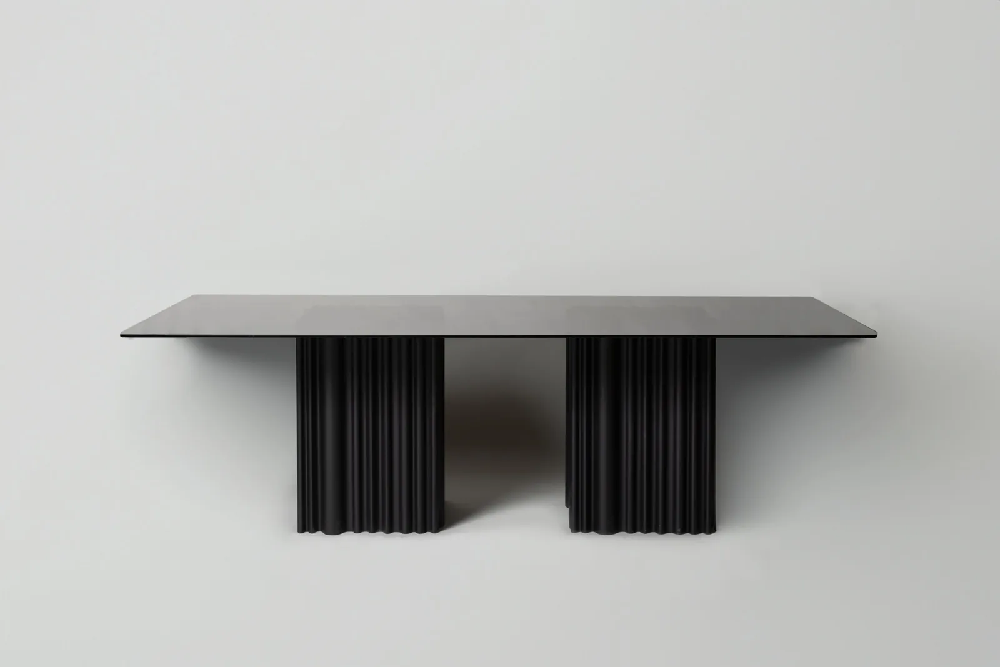
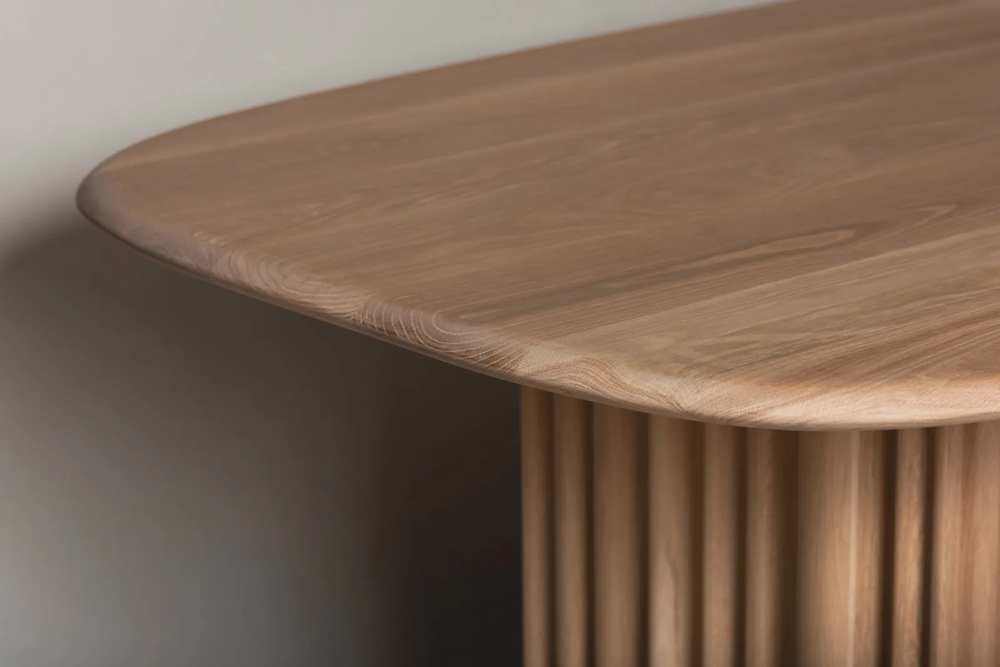
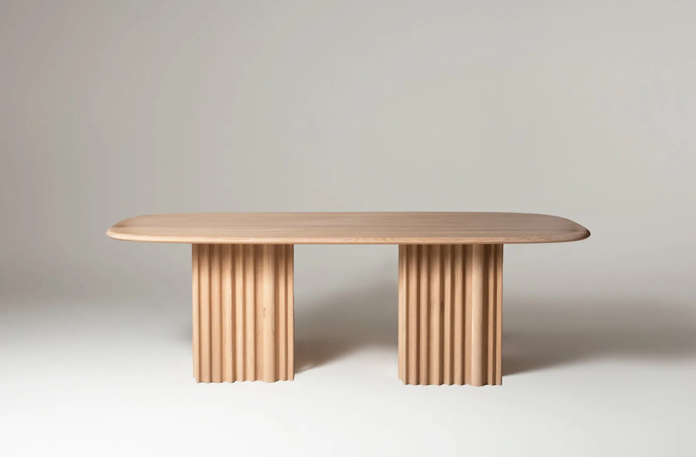
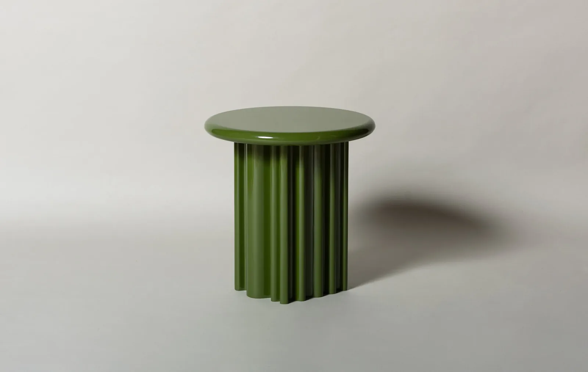

01

Referencia de catálogo
Mesa Onda Glass
Vidrio templado y bases de roble; medida publicada 240 × 110 × 75 cm.

Imagen publicada por ETEREA DesignsLa colección Onda explora textura, vidrio y madera. Selecciona una pieza y considera el espacio que la rodea.
Guarda tus referencias en una lista local y prepara el siguiente paso. Precios, variantes y existencias se revisan en cada ficha oficial.

Vidrio templado y bases de roble; medida publicada 240 × 110 × 75 cm.

Mesa de la colección Onda; consultar tamaño y acabados en la ficha oficial.

Mesa lateral de la colección Onda; selección para completar el ambiente.
Colecciones de mobiliario y fabricación a medida; ofrece producción para proyectos comerciales y marcas de muebles.
Prueba cantidades y condiciones. Obtén un resumen local para revisar antes de hablar con la empresa.
Datos revisados el 3 de noviembre de 2026. La empresa confirma cualquier condición vigente.
Vidrio templado y bases de roble; medida publicada 240 × 110 × 75 cm.
Mesa de la colección Onda; consultar tamaño y acabados en la ficha oficial.
Mesa lateral de la colección Onda; selección para completar el ambiente.
La página de servicios anuncia fabricación a medida.
La ficha Onda Glass indica otros acabados disponibles por consulta.
La página de servicios presenta producción para proyectos y marcas de muebles.
La página de contacto publica zona 15, Ciudad de Guatemala.
No. La ficha oficial invita a consultar precio y especificaciones con ETEREA.